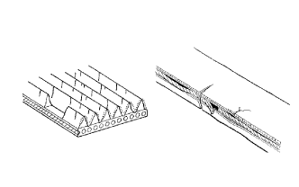
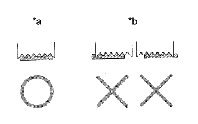
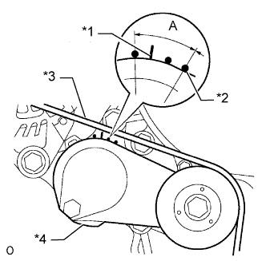
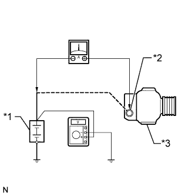

СИСТЕМА ЗАРЯДКИ АККУМУЛЯТОРНОЙ БАТАРЕИ > ПРОВЕРКА БЕЗ СНЯТИЯ С АВТОМОБИЛЯ |
| 1. CHECK BATTERY CONDITION |
Check the battery for damage and deformation. If severe damage, deformation or leakage is found, replace the battery.
Check the electrolyte quantity of each cell.
For maintenance-free batteries:
For non-maintenance-free batteries:
Turn the ignition switch off and turn on the headlights for 20 to 30 seconds. This removes the surface charge from the battery.
Measure the battery voltage between the negative (-) and positive (+) terminals of the battery.
| 2. INSPECT BATTERY TERMINAL AND FUSE |
Check that the battery terminals are not loose or corroded.
If the terminals are corroded, clean the terminals.
Measure the resistance of the H-fuses and fuses.
| 3. INSPECT FAN AND GENERATOR V BELT |
|  |
Убедитесь в отсутствии износа, трещин и других признаков повреждения.
При обнаружении следующих дефектов замените вентилятор и поликлиновой ремень генератора.
|  |
Убедитесь в том, что приводной ремень правильно располагается в углублениях шкива.
| *a | ПРАВИЛЬНО |
| *b | НЕПРАВИЛЬНО |
|  |
Убедитесь, что индикаторная метка натяжителя находится в диапазоне A, как показано на рисунке.
| *1 | Метка со стороны кронштейна |
| *2 | Метка со стороны рычага |
| *3 | Поликлиновой ремень вентилятора и генератора |
| *4 | Натяжитель |
| 4. INSPECT GENERATOR WIRING |
Visually check the generator wiring.
Check that the wiring is in good condition.
| 5. CHECK FOR ABNORMAL NOISES |
Listen for abnormal noises from the generator.
Check that no abnormal noises are heard from the generator while the engine is running.
| 6. INSPECT CHARGE WARNING LIGHT CIRCUIT |
Turn the ignition switch to ON. Check that the charge warning light comes on.
Start the engine and check that the light goes off.
If the light does not operate as specified, troubleshoot the charge warning light circuit.
| 7. INSPECT CHARGING CIRCUIT WITHOUT LOAD |
Connect a voltmeter and ammeter to the charging circuit as follows.
|  |
Disconnect the wire from terminal B of the generator, and then connect it to the negative (-) lead of an ammeter.
| *1 | Battery |
| *2 | Terminal B |
| *3 | Generator |
Connect the positive (+) lead of the ammeter to terminal B of the generator.
Connect the positive (+) lead of a voltmeter to the positive (+) terminal of the battery.
Ground the negative (-) lead of the voltmeter.
Check the charging circuit.
Maintain the engine speed at 2000 rpm and check the reading on the ammeter and voltmeter.
| 8. INSPECT CHARGING CIRCUIT WITH LOAD |
With the engine running at 2000 rpm, turn the high beam headlights on and turn the heater blower switch to the HI position.
Check the reading on the ammeter.